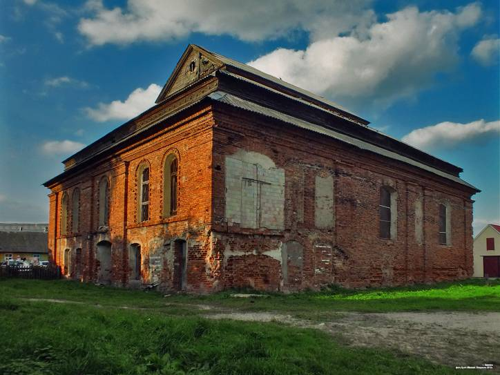

В 1878-1879 идет новый этап переписки с Ошмянской городской управой и полицейским управлением, составляется план нового завода. Нашлось и место для его строительства. С этой целью Л.Д. Стругач приобретает участок земли на берегу реки Ошмянки (ул. Борунская) и начинает строительство параллельно с попытками добиться разрешения на открытие завода. Рядом строится деревянный дом для рабочих и сараи.
К августу 1880 года двухэтажное каменное здание завода находилось в стадии завершения строительства (возведено до крыши). В этом же месяце Стругачу было выдано «Удостоверение Ошмянского уездного полицейского управления». Вывод документа гласил: «Препятствий не имеется, необходимо разрешение Виленского губернского правления»
23 сентября 1880 года городской голова Высоцкий сообщает, что построенному дрожжевому винокуренному заводу опасности от пожара нет, а также, что и дом, и местность соответствуют всем гигиеническим и народного здравия требованиям и что открытие завода может принести пользу для городских жителей.
Таким образом, в сентябре 1880 года здание завода было построено и полностью готово к эксплуатации. Последнее слово осталось за Виленским начальством. 30 октября 1880 года было заведено дело «Дело Виленского губернского правления о разрешении купцу Лейбе Стругачу построить винокуренно-дрожжевой и пивоваренный заводы». Решение было в пользу Лейбы Давидовича. Дата официального открытия не известна, поэтому ее заменяет дата документа, разрешающего открытие – 6 ноября 1880 года.
Долгое время в Беларуси (до 2017 года) существовало только два завода, которые выпускали дрожжи:
1)Минский, построенный в 1891 году евреями Янкель и Зэльманам Раковщик
2)Ошмянский. Как упоминалось ранее, построеный Л. Стругачем в 1880 году (В начале ХХ века промышленник объединил дрожжевой завод в Ошмянах и свою пивоварню в Лиде в "Товарищество Л.Стругача" и делал поставки этого товара в Вильно).
Вышеупомянутый водочный завод Л. Стругача функционировал только до 1880 года. Он был закрыт 1 января 1880 года. Вместо завода в доме Моисея Каменецкого был открыт оптовый склад.
Есть все основания предполагать, что дом М. Каменецкого вскоре перешел жене Стругача. Так, по данным 1884 года склад значится расположенным в доме Гинды Стругач на Виленской улице.
Завод Лейбы Давидовича Стругача является цеховым предприятием (с числом рабочих 16 человек и 1 механическим двигателем). Основываясь на данных книги М.Ф. Болбаса «Промышленность Белоруссии 1860-1900», изданную в 1978 году, можно дать характеристику деятельности завода до революции. В 1881 году появилась паровая машина. Периодически котел подвергался испытаниям. 25 мая 1890 года Стругачу было выдано свидетельство сроком на 3 года о том, что гидравлическим прессом был испытан паровой котел, что котел предназначен для действия паровой машины-мельницы, а также для получения пара для варки затора и сгонки спирта.
В 1895 году уже имелось 2 котла. Паровая машина изначально имела 5 лошадиных сил, в 1908 году -58 л.с., в 1913-1915- две паровые машины мощностью 100 л.с.
Численность рабочих в 1884 году -10 человек,1885 году – 15 человек, 1900-31, 1908 – 32, 1913 – 35.[4]
Известно, что в 1893 году завод выпустил 300 тыс. футов дрожжей (≈136078 кг.) и 42,5 тыс. ведер спирта
Также Стругачу принадлежала водяная мельница с двумя поставами, где трудились 4 рабочие и 1 служащий. Видимо, он ее арендовал, так как платил за помещение 500 рублей в год. [4, с. 17]
Еврейская община в Ошмянах была очень сильной и довольно состоятельной. Это позволило построить в городе в конце XIX века каменную синагогу. Одно из самых больших пожертвований на строительство поступило от Лейбы Стругача.
Современный вид:
О больших прибылях Стругача говорит и то, что в 1888 году он построил на городской площади двухэтажный жилой каменный дом. Также имеются сведения, что завод расширялся и перестраивался в 1903г. 29 октября 1903 года на заводе возник пожар, сгорела крыша, предприятию причинен некоторый ущерб.
Таким образом, появление Лейбы давидовича Стругача на Ошмянской земле, его женитьба на местной жительнице Гинде Каменецкой значительно повлияло на дальнейшую историю Ошмянщины.